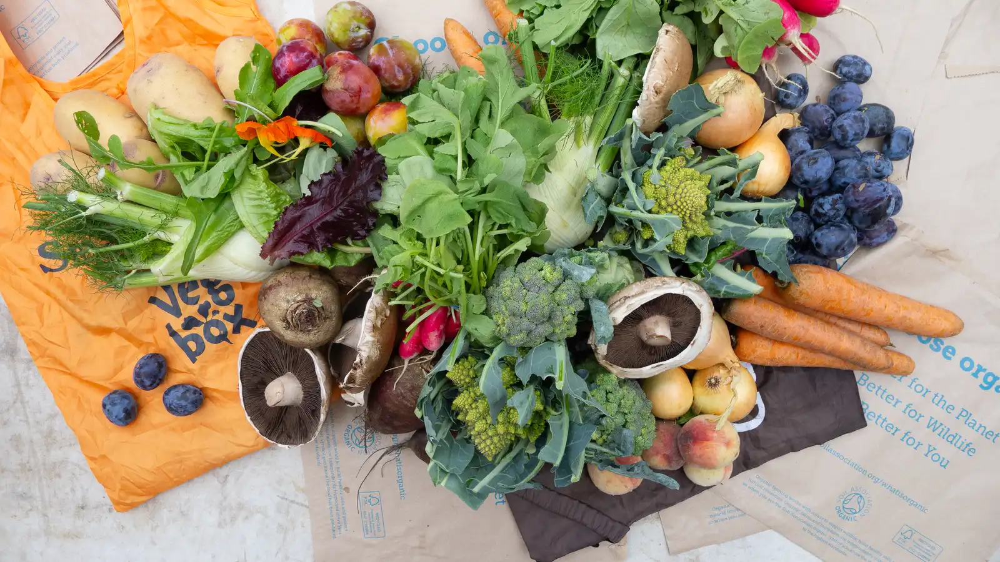
A community co-operative in Kentish Town · Since 2012
Seasonal organic veg, every week, from £9.
We are a not-for-profit co-operative, packing bags of organic produce from local UK farms, delivering to collection points across Camden and Islington. We are run by our members, and proudly rooted in North London since 2012.
Join the scheme How it works 4.9 · 96 Google reviewsSimple as 1, 2, 3
How it works
Pick your bag
Become a member and choose from four bag sizes, with or without a weekly fruit bag alongside. Membership is open to everyone.
Fresh from the farm
Our farmers harvest early in the week and deliver to our packing yard, where the team packs everything into reusable bags on Wednesday morning.
From a point near you
We text you when your bag reaches your local collection point on Wednesday. Collect it by Friday, and return your reusable bag from the week before.
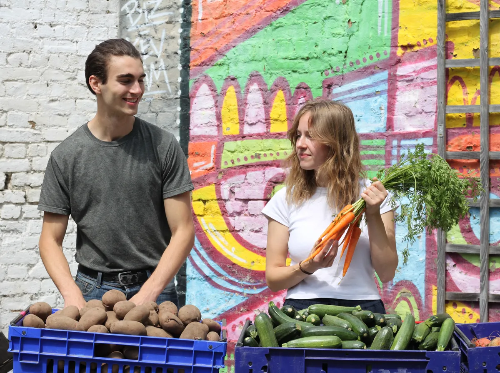
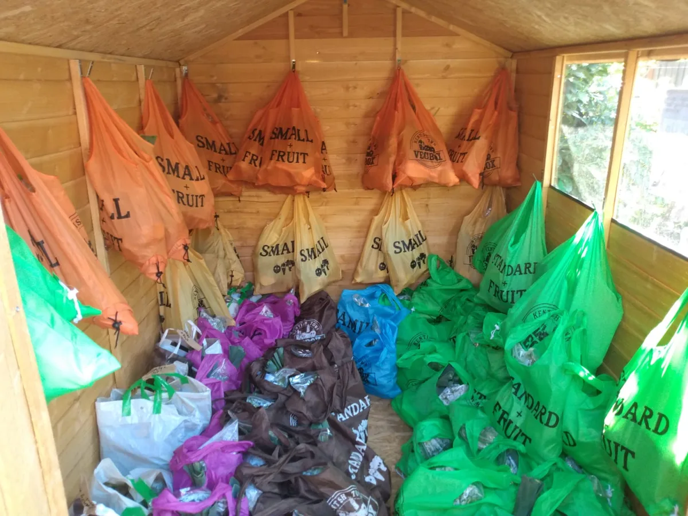
Going away? Just email us by Wednesday with a week's notice and we'll pause your bag and refund you. Any uncollected veg goes to local community food schemes and food banks – nothing is wasted.
What's in season
right now, in July
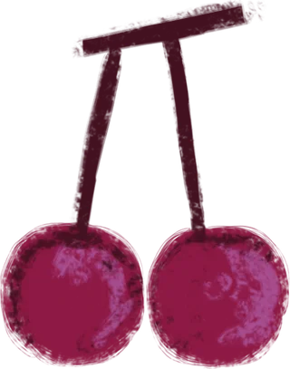
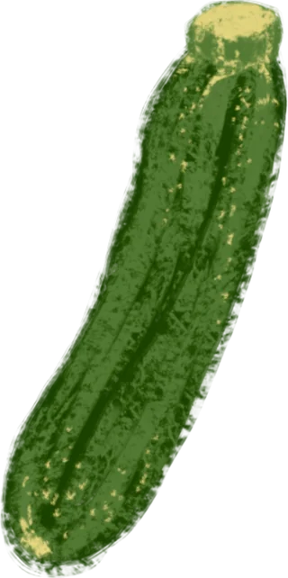
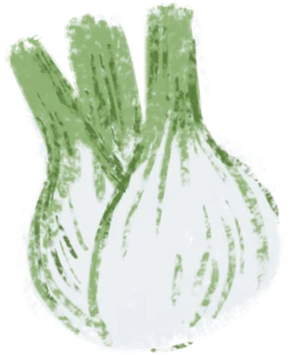
Our veg bags
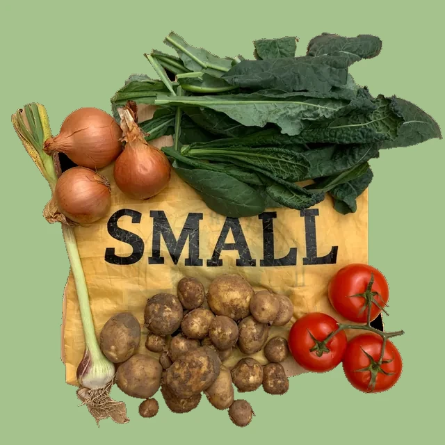
Small
£9 / week £11.65 with fruit
- For 1 person
- 4 varieties of produce
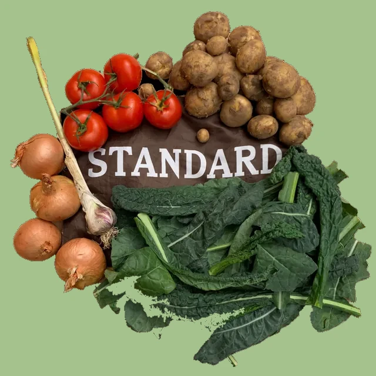
Standard
£12 / week £15.50 with fruit
- For 1–2 people
- 5 varieties of produce
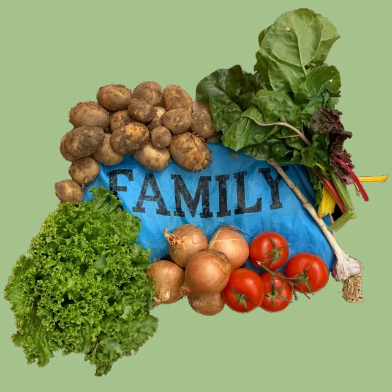
Family
£16.50 / week £20.80 with fruit
- For 3–4 people
- 6 varieties of produce
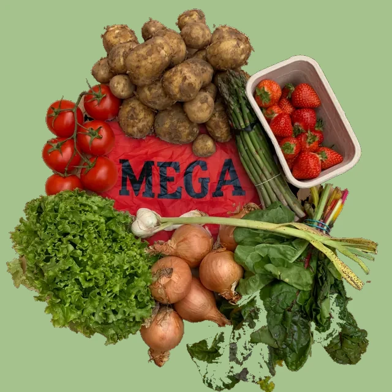
Mega
£26 / week fruit included
- For 4+ people
- 9 varieties of produce
We prioritise small-scale organic farms in southeast England – local and, by default, seasonal. As a not-for-profit co-operative, any surplus we make is reinvested in the organisation, the community, or other local food projects.
Good food for everyone
Affordable by design
We believe everyone should have access to fresh, seasonal, organic produce, so we work hard to keep our bags affordable and accessible. We accept Healthy Start vouchers, offer a 20% low-income discount, and will deliver bags to people who are unable to leave their home to collect them.
Our Solidarity Fund, supported by members who can afford a little more, quietly subsidises bags for neighbours who need it. To contribute or to ask for support, get in touch – no forms, no fuss.
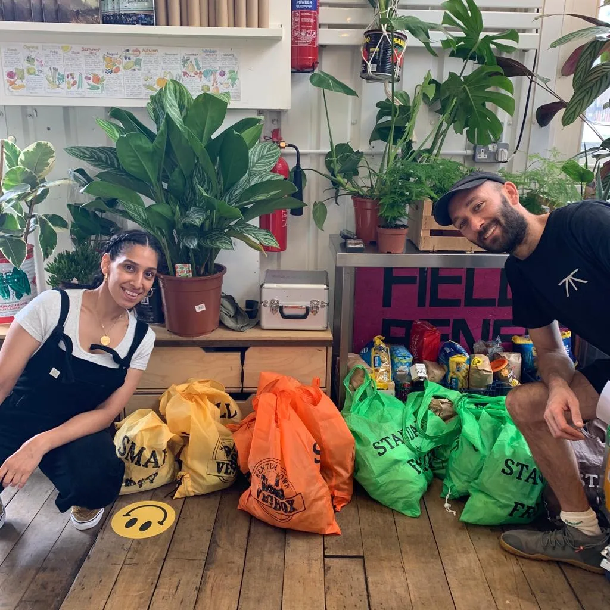
Every Wednesday
Collection points
Bags are delivered on Wednesday to over twenty collection points dotted across Kentish Town, Camden, Islington and beyond – from Camden Market to Highgate, King's Cross to Finsbury Park. Find your nearest on the map, and pick it when you sign up.
Can't get to a collection point? For an extra £3 we can home-deliver your bag via our partner bike couriers, Neko Home Delivery.
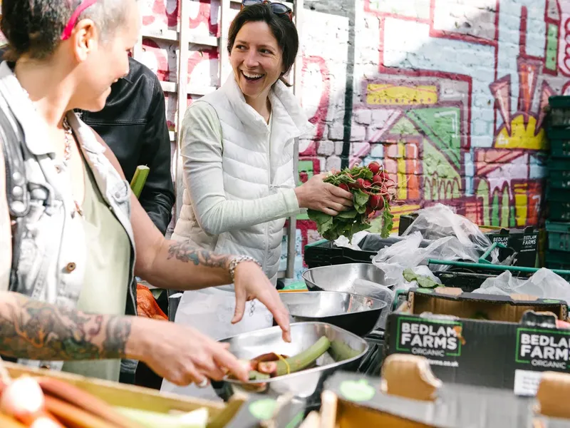
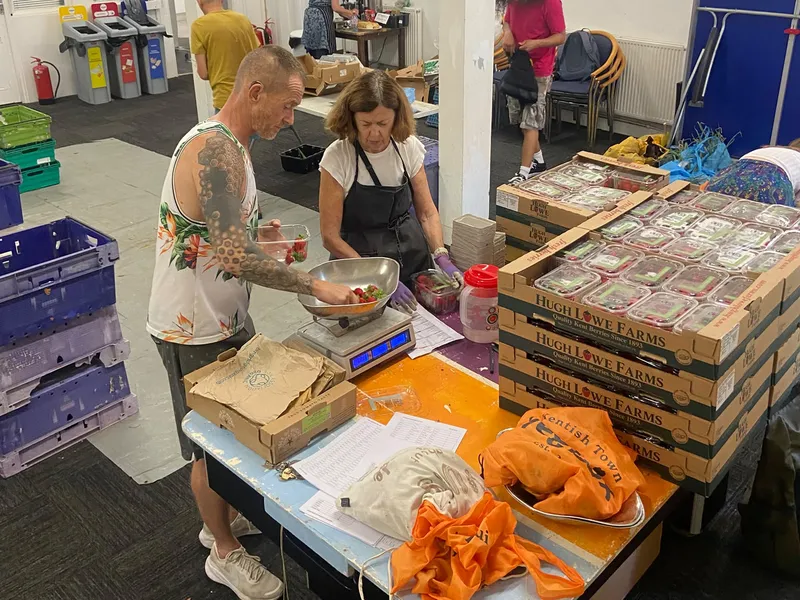
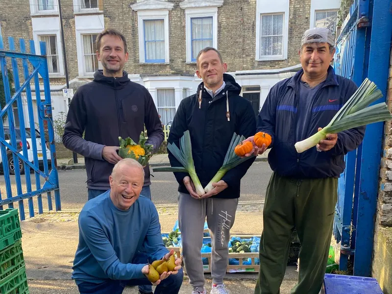
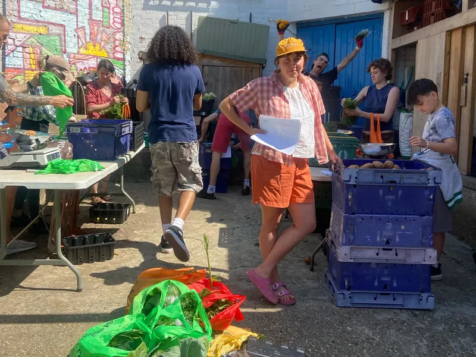
Come and say hello
Visit the packing yard
The Thanet, Herbert Street, Kentish Town, NW5 4HD
We're there every Wednesday from 9am to 3pm packing the week's fruit and veg – do drop by if you'd like to chat to us face to face.
Fancy lending a hand? Volunteering on a Wednesday is sociable, out in the fresh air, and rewarded in veg: 20% off if you help once a month, 50% off twice a month, or a free bag if you help every week.
Don't just take our word for it
What our members say
from 96 member reviews on Google
"I love the surprise and challenge of ingredients that we receive which makes cooking more creative. The fresh strawberries and plums taste and smell COMPLETELY different to anything you can buy in the shops."
— Fred, on Google
"We also get to be friends with the people who run the organisation, as they invite us to cook outs, and get togethers, throughout the year. Highly recommend this truly local, sustainable foodie service."
— Sam, on Google
"Wonderful community driven service providing affordable, organic fruit and vegetables directly from the farmers that grow them. Run by passionate and friendly people who care."
— Salazar, on Google
New members always welcome
Join the scheme
Email us and we'll help you choose a bag, pick a collection point, and get set up – usually in time for next week's veg. As a member of the co-operative you'll have a say in how the scheme is run, so chime in by email or on social media, and join us at our AGM.
You can also ring us on 07815 771 939 – we work part time on Vegbox, so leave a message and we'll get back to you, or email info@vegbox.org.uk.
Sign up online